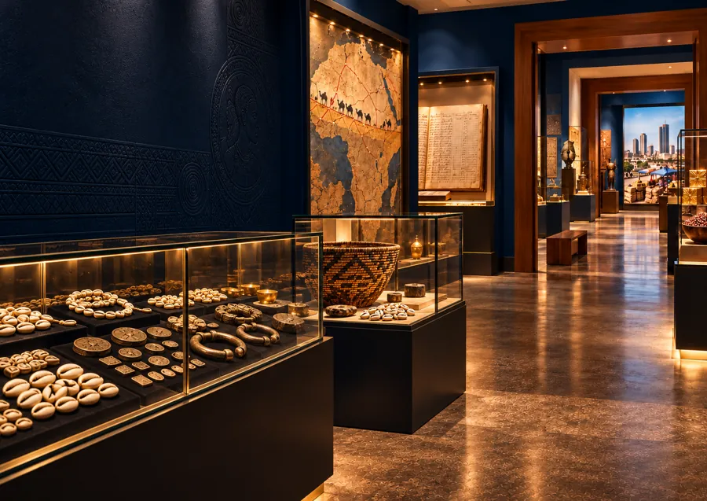

Apprendre.
Un sujet qui vous concerne, une explication claire et des outils pour essayer avec vos chiffres, à votre rythme ou avec d’autres. Gratuitement.
Commencer à apprendreL’ARGENT S’APPREND · UNE EXPÉRIENCE EFA
Budget, épargne, projets : comprenez votre situation, essayez nos outils et choisissez votre prochain pas.
Trouver mon point de départDes contenus et des outils gratuits pour commencer.
Former mon équipe ou ma communauté
Le fondateur
Après une décennie dans la banque, l’investissement et le conseil, il a créé EFA pour rendre l’argent plus compréhensible à partir des réalités africaines.
VOTRE CHEMIN AVEC EFA
Commencez gratuitement, puis choisissez si vous souhaitez être accompagné ou préparer votre passage à l’action.
Un sujet qui vous concerne, une explication claire et des outils pour essayer avec vos chiffres, à votre rythme ou avec d’autres. Gratuitement.
Commencer à apprendreDes ateliers avec un professionnel, sur votre cas : budget, tontine, patrimoine, entreprise.
Choisir mon atelierInvestir à la BRVM, choisir sa SGI, ouvrir son compte : vous agissez vous-même, en connaissance de cause.
Préparer mon lancement01 · APPRENDRE · GRATUIT, AVEC LES OUTILS, SEUL OU EN GROUPE
EFA est une plateforme moderne pensée pour chacun. Que vous partiez de zéro ou que vous ayez déjà un projet, elle relie des situations africaines, des explications claires et des exercices concrets pour avancer à votre rythme.
L’école EFA est votre parcours principal : trois cycles, 23 modules, du premier budget au patrimoine.
Votre premier pas
Ou explorez tous les contenus
Deux questions pour savoir par où commencer.
↗DiagnosticDiagnostic financierSix minutes pour faire le point : budget, épargne, dettes.
↗Parcours principalL’école EFATrois cycles, Fondations, Maîtrise et Patrimoine, du diagnostic au certificat.
↗OutilsTous les outils gratuitsBudget, épargne, diagnostic, Dico : la boîte à outils complète.
↗GuideEly, le guide EFAPosez vos questions sur le budget, la tontine ou l’épargne.
↗50/30/20, enveloppes, base zéro, adaptés aux réalités africaines.
↗LeçonBudget et mobile moneyNe plus perdre le fil de ses petites dépenses.
↗LeçonLes engagements et les exceptionsLoyer, tontine, envois aux parents : ce qui part avant de choisir.
↗LeçonConsommer et acheterInflation, crédit chez le commerçant, négocier.
↗LeçonRenégocier une detteQuand les mensualités ne passent plus : quoi demander, à qui.
↗LeçonÉpargner : par où commencerSe payer en premier, avec un petit revenu et la famille.
↗LeçonOù garder sa réserve ?Banque, microfinance ou mobile money.
↗Une méthode pour bien décider, avec Koffi.
↗QuestionDois-je prêter 300 000 FCFA à ma sœur ?La réponse en 30 secondes, puis cinq points à vérifier.
↗LeçonL’aîné, assureur de la familleLa solidarité africaine, une assurance sans contrat.
↗LeçonAvant l’arrivée d’un enfantLister les dépenses et vérifier ce qui est couvert.
↗LeçonLes études des enfants et l’héritageChiffrer tôt, puis préparer ce que la famille devra savoir.
↗LeçonAprès le décès d’un procheLes premières décisions d’argent, ce qui presse et ce qui attend.
↗ListeLes papiers que ma famille doit retrouverComptes, tontines, dettes, assurances, terrain.
↗LeçonCotiser depuis l’étrangerDiaspora : transferts, chantier, retraite.
↗Un revenu stable à partir d’une activité qui varie.
↗LeçonSéparer les pochesMon argent, celui de l’activité, celui qu’on m’a confié.
↗LeçonAcheter un terrain sans se faire avoirLes papiers à vérifier, de l’attestation villageoise au titre foncier.
↗LeçonLe budget du chantierConstruire par étapes, payer à l’avancement.
↗Des épisodes d’une minute avec Koffi.
↗DicoLe Dico EFAUne notion à la fois, en langage clair.
↗BibliothèqueLa bibliothèque EFALivres, musée de l’économie, capitaines d’industrie.
↗LectureL’Homme le plus riche de BabyloneUne lecture commentée de la bibliothèque.
↗ExpositionLa balade de l’économieSix salles et huit jeux : marchés, banques, franc CFA.
↗Votre premier pas
Tout ce qui se fait ensemble
Diagnostic, parcours et suivi pour vos salariés, membres ou bénéficiaires.
↗ProgrammeComposer le programmeChoisir les modules de votre organisation en ligne.
↗AccèsRejoindre le programme de mon organisationEntrez le code donné par votre structure.
↗Tableau de bordEspace organisationQui s’est inscrit, qui avance, qui a terminé.
↗ContactPrendre rendez-vousÉchanger avec EFA sur votre programme.
↗
MUSÉE EFA · GRATUITLe muséeUn concept original EFA
Le cercle, c’est l’argent qui tourne et repart. La spirale, c’est l’argent dont une part reste à chaque tour, et qui grandit. Le concept est né de la Tribune n° 1 d’Élysée Johnson et des milliers de réactions qu’elle a suscitées.
Le cercle devient une spirale quand le groupe garde une part.
02 · S’ENTRAÎNER · EN ATELIER
Vingt ateliers, dont dix en petit groupe avec Élysée Johnson. Un sujet précis, un exercice fait sur votre cas, un prochain pas clair.
 FINANCES PERSONNELLESReprendre la main
FINANCES PERSONNELLESReprendre la mainVotre mois réel, rangé en trois poches.
Ce qui est engagé, ce qui peut se renégocier, ce que l’on peut dire.
Un montant tenable, mis de côté chaque mois, et son suivi.
 TONTINE ET ÉPARGNE · AVEC ÉLYSÉE JOHNSONMa tontine,
TONTINE ET ÉPARGNE · AVEC ÉLYSÉE JOHNSONMa tontine,Premier ou dernier tour : qui emprunte, qui prête.
La part gardée, fixée avant que le pot arrive.
Une part de chaque tour qui reste et grandit.
 PATRIMOINE · AVEC ÉLYSÉE JOHNSONDonner un cap
PATRIMOINE · AVEC ÉLYSÉE JOHNSONDonner un capCe que l’on veut financer, et quand.
Comparer ce qui rapporte, ce qui immobilise, ce qui protège.
Ce qu’il faut vérifier avant de signer.
 ENTREPRISE · AVEC ÉLYSÉE JOHNSONFaire parler
ENTREPRISE · AVEC ÉLYSÉE JOHNSONFaire parlerChiffre d’affaires, coûts, marge : la vraie part qui reste.
Anticiper les creux avant qu’ils arrivent.
Les options, leur coût, et ce qu’on vous demandera.
Faire reconnaître ce que vous savez : certificat Fondations · Maîtrise · Patrimoine · CEFA ★Espaces dédiés : Cadres · Patrimoine · DirigeantsVous exercez dans la finance et aimez transmettre ? Proposer un atelier
Présentation illustrative · intervenants et programmes à confirmerPour vous, à partir de votre réalité
Vous avez appris et essayé. Maintenant, choisissez ce que vous voulez mettre en pratique, à votre rythme et en connaissance de cause.
Comprendre qui intervient, savoir quoi vérifier et s’exercer avant d’engager un franc.

La Bourse, les SGI, les autorités de marché et les autres intervenants : connaître le rôle de chacun pour savoir à qui s’adresser.
Entrer dans l’espace Se lancer →
Frais, risques, horizon, conditions de sortie : une liste concrète à parcourir avant de choisir un intermédiaire ou un produit.
Voir les questions à poser ↗Agrément, frais, compte-titres : avant de signer.
↗FormationL’essentiel de la BourseÊtre prêt, comprendre ce qu’on achète.
↗Cas pratiquesJ’investis pour quel projet ?Un horizon, plusieurs issues possibles.
↗LeçonDAT et emprunts d’ÉtatCe qu’on prête, ce qu’on récupère.
↗LeçonOPCVM et FCPE expliquésFCP, SICAV, FCPE dans l’UMOA, leurs frais.
↗
Lire un indice, définir un objectif, essayer un portefeuille fictif : expérimenter les conséquences de ses choix sans engager d’argent réel.
Explorer l’expérience Marchés ↗ INVESTIR À LA BRVM ↗
INVESTIR À LA BRVM ↗
04 / VOTRE PREMIER PORTEFEUILLE
Ici, on choisit sa SGI, on ouvre son compte et on construit son premier portefeuille, une étape après l’autre.
Pour aller plus loin · avec Élysée Johnson
En petit groupe, sur votre cas : votre compte-titres ouvert, votre SGI choisie, votre premier ordre préparé.
Voir l’atelier ↗Demain, avec EFADes partenaires sélectionnés et des clubs d’investissement : nous l’annoncerons ici, avec le rôle d’EFA affiché avant tout engagement.
Aucun acteur représenté n’est présenté comme partenaire d’EFA. Le rôle et la rémunération éventuelle d’EFA seront indiqués avant toute mise en relation.
04 · LE MÉDIA EFA
Une actualité décryptée, une idée qui questionne, une étude qui ouvre des perspectives. Trois façons d’apprendre à mieux décider.
Des convictions argumentées sur l’argent, la confiance et ce que nous pouvons construire.
Lire les tribunesObserver les pratiques, vérifier les sources et explorer les choix de demain.
Découvrir les études05 · ÉTUDES ET PROSPECTIVE
Les études partent des usages réels de l’argent. La prospective ouvre des questions sur les choix qui façonneront l’Afrique de demain.
Partir du terrain, montrer la méthode, rendre les chiffres lisibles.
Entrer dans les études ↗
Explorer plusieurs trajectoires et revenir aux décisions d’aujourd’hui.
Explorer la prospective ↗ EFA ÉTUDES · PUBLIÉESLes études
EFA ÉTUDES · PUBLIÉESLes étudesL’ARGENT S’APPREND.
QUESTIONS FRÉQUENTES
Non. Les parcours partent d’exemples concrets et introduisent les notions progressivement.
Les contenus d’Apprendre sont ouverts à tous. S’entraîner réunira l’accompagnement, les ateliers et les certificats ; leurs modalités seront précisées avant lancement.
Non. Les domaines affichés sont une proposition éditoriale. Les noms, cours et modalités seront ajoutés après confirmation.
Pas encore. Les fiches de Se lancer sont des emplacements de travail. Aucune SGI n’est partenaire à ce jour, et le rôle d’EFA sera indiqué avant tout engagement.
Non. Cette expérience explique des mécanismes et aide à formuler des questions. Elle ne recommande aucun produit financier.
Non. Le calculateur de cette version locale fonctionne dans votre navigateur et n’envoie pas vos chiffres.